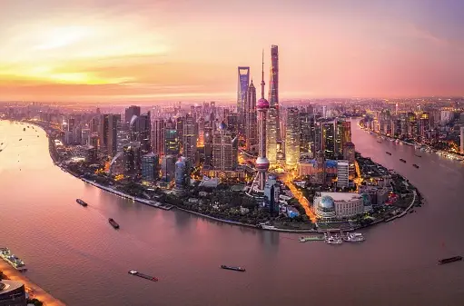

Shanghai, the Oriental Paris, is China's biggest and most prosperous city. It is one of China's greatest economic and cultural centers, popularly seen as the birthplace of everything considered modern in China. Shanghai is a tourist destination famous for historical landmarks as well as modern, ever-expanding skylines.
Final words As I reflect on my first trip to Shanghai, China, I am filled with a sense of awe and gratitude. The journey has been nothing short of remarkable, filled with captivating experiences, cultural discoveries, and unforgettable moments. From navigating the language barriers to immersing myself in the vibrant food scene, every aspect of this adventure has been both challenging and rewarding.
The warmth and hospitality of the local people left an indelible mark on my heart. The genuine curiosity and friendliness extended towards me, as a foreign visitor, made me feel welcome and valued. The encounters with locals, whether through shared meals or chance conversations, provided a glimpse into the rich cultural tapestry of China, leaving me with cherished memories and a deeper appreciation for the country’s heritage.
As I bid farewell to Shanghai, I carry with me a newfound appreciation for the rich cultural heritage, culinary delights, and warm hospitality that define this remarkable city. My first trip to China has been an enlightening and transformative experience, inspiring me to continue exploring the world and embracing the diverse cultures that shape our global community. I am grateful for the opportunity to have experienced Shanghai as a foreign visitor, and I eagerly look forward to future adventures that await me in this captivating country and beyond.